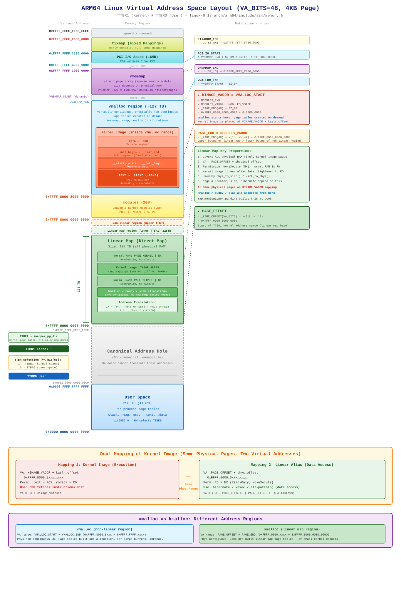

基于 linux-6.18 内核源码:arch/arm64/include/asm/memory.h,arch/arm64/include/asm/pgtable.h,arch/arm64/mm/mmu.c
虚拟地址空间布局图:

ARM64 (AArch64) 架构使用 64 位虚拟地址空间，但硬件仅使用低位进行地址翻译。在 VA_BITS=48、4KB 页大小的配置下，可用虚拟地址范围为 2 x 256TB：
0x0000_0000_0000_0000 ~ 0x0000_FFFF_FFFF_FFFF (256 TB)0xFFFF_0000_0000_0000 ~ 0xFFFF_FFFF_FFFF_FFFF (256 TB)0x0001_0000_0000_0000 ~ 0xFFFE_FFFF_FFFF_FFFF (硬件无法翻译)硬件通过虚拟地址的 bit[55] 选择翻译表基地址寄存器：
| bit[55] | 寄存器 | 地址空间 |
|---|---|---|
| 0 | TTBR0_EL1 | 用户空间 (每进程独立页表) |
| 1 | TTBR1_EL1 | 内核空间 (swapper_pg_dir) |
256TB 的内核地址空间 (TTBR1) 以 PAGE_END 为界，分为上下两半：
PAGE_OFFSET ~ PAGE_END): 线性映射区 (direct map)，128 TBPAGE_END ~ 0xFFFF_FFFF_FFFF_FFFF): 非线性映射区 (modules, vmalloc, 内核镜像, vmemmap, PCI I/O, fixmap)| 虚拟地址 | 宏定义 | 定义展开 | 区域说明 |
|---|---|---|---|
0xFFFF_FFFF_FFFF_FFFF |
— | — | 保护页 / 未使用 |
0xFFFF_FFFF_FF80_0000 |
FIXADDR_TOP |
-UL(SZ_8M) |
fixmap (早期控制台, FDT) |
0xFFFF_FFFF_C180_0000 |
PCI_IO_END |
PCI_IO_START + SZ_16M |
|
0xFFFF_FFFF_C080_0000 |
PCI_IO_START |
VMEMMAP_END + SZ_8M |
PCI I/O (16MB) |
| [保护间隔: 8MB] | |||
0xFFFF_FFFF_C000_0000 |
VMEMMAP_END |
-UL(SZ_1G) |
vmemmap (struct page 数组) |
| (动态) | VMEMMAP_START |
VMEMMAP_END - VMEMMAP_SIZE |
|
| [保护间隔: 8MB] | |||
| (动态) | VMALLOC_END |
VMEMMAP_START - SZ_8M |
vmalloc 区 (~127 TB) |
| 内核镜像位于此范围内 | |||
0xFFFF_8000_8000_0000 |
KIMAGE_VADDR = VMALLOC_START |
MODULES_END |
|
| modules 模块区 (2GB) | |||
0xFFFF_8000_0000_0000 |
PAGE_END = MODULES_VADDR |
-(1UL << 47) |
分界线: 非线性区 / 线性区 |
| 线性映射区 (128 TB) | |||
0xFFFF_0000_0000_0000 |
PAGE_OFFSET |
-(1UL << 48) |
内核地址空间起始 |
arch/arm64/include/asm/memory.h 中的核心定义：
#define VA_BITS (CONFIG_ARM64_VA_BITS) // 48
#define _PAGE_OFFSET(va) (-(UL(1) << (va))) // -(1<<48) = 0xFFFF_0000_0000_0000
#define PAGE_OFFSET (_PAGE_OFFSET(VA_BITS))
#define _PAGE_END(va) (-(UL(1) << ((va) - 1))) // -(1<<47) = 0xFFFF_8000_0000_0000
#define MODULES_VADDR (_PAGE_END(VA_BITS_MIN)) // 0xFFFF_8000_0000_0000
#define MODULES_VSIZE (SZ_2G) // 0x8000_0000
#define MODULES_END (MODULES_VADDR + MODULES_VSIZE) // 0xFFFF_8000_8000_0000
#define KIMAGE_VADDR (MODULES_END) // 0xFFFF_8000_8000_0000arch/arm64/include/asm/pgtable.h 中的补充定义：
#define VMALLOC_START (MODULES_END) // = KIMAGE_VADDR
#define VMALLOC_END (VMEMMAP_START - SZ_8M)线性映射区是从 PAGE_OFFSET 开始、大小为 128TB 的连续虚拟地址区间，将全部物理 RAM 按固定偏移映射进来：
// arch/arm64/include/asm/memory.h
#define __phys_to_virt(x) ((unsigned long)((x) - PHYS_OFFSET) | PAGE_OFFSET)
#define __lm_to_phys(addr) (((addr) - PAGE_OFFSET) + PHYS_OFFSET)给定物理地址 PA，其线性映射虚拟地址为：
VA = (PA - PHYS_OFFSET) | PAGE_OFFSET这是 phys_to_virt()、virt_to_phys()、va()、pa() 等函数的基础。
map_mem()线性映射在早期启动阶段由 paging_init() -> map_mem(swapper_pg_dir) 建立（位于 arch/arm64/mm/mmu.c）：
void __init paging_init(void)
{
map_mem(swapper_pg_dir); // 建立线性映射
memblock_allow_resize();
create_idmap(); // 建立恒等映射
declare_kernel_vmas(); // 注册内核 VMA
}map_mem() 的执行分为以下步骤：
第一步：临时将内核镜像区域 [_text, __init_begin) 标记为 NOMAP：
memblock_mark_nomap(kernel_start, kernel_end - kernel_start);目的是防止通用循环为内核代码/只读数据段创建可写别名。
第二步：以 PAGE_KERNEL | NX 权限映射所有其他物理 RAM：
for_each_mem_range(i, &start, &end) {
__map_memblock(pgdp, start, end, pgprot_tagged(PAGE_KERNEL), flags);
}flags 包含 NO_EXEC_MAPPINGS —— 线性映射区永远不可执行。
第三步：单独映射内核镜像区域，使用受控权限：
__map_memblock(pgdp, kernel_start, kernel_end,
PAGE_KERNEL, NO_CONT_MAPPINGS);
memblock_clear_nomap(kernel_start, kernel_end - kernel_start);这创建了内核镜像的线性别名（详见第 4 节），初始为可写（用于 alternative patching 指令修补），后续收紧为只读。
第四步（启动后期）：mark_linear_text_alias_ro() 去除写权限：
void __init mark_linear_text_alias_ro(void)
{
update_mapping_prot(__pa_symbol(_text), (unsigned long)lm_alias(_text),
(unsigned long)__init_begin - (unsigned long)_text,
PAGE_KERNEL_RO);
}kmalloc() 和 slab 分配器在此工作。phys_to_virt() / virt_to_phys()：仅适用于线性映射区地址。virt_to_phys() 获取 DMA 一致性缓冲区的物理地址。这是 ARM64 内存布局中最重要的概念之一：内核镜像的物理页面拥有两套不同的虚拟地址映射，权限各不相同。
KIMAGE_VADDR 附近）由早期启动代码 head.S 创建。内核从这里执行代码。
| 属性 | 值 |
|---|---|
| 虚拟地址 | KIMAGE_VADDR + kaslr_offset（约 0xFFFF_8000_8xxx_xxxx） |
| 转换公式 | VA = PA + kimage_voffset |
.text 权限 |
只读 + 可执行 (PAGE_KERNEL_ROX) |
.rodata 权限 |
只读 (PAGE_KERNEL_RO) |
| 用途 | CPU 从这里取指令执行 |
PAGE_OFFSET 区域）由 map_mem() 创建。同一物理页在线性映射区再次出现。
| 属性 | 值 | |
|---|---|---|
| 虚拟地址 | PAGE_OFFSET + 偏移（约 0xFFFF_0000_0xxx_xxxx） |
|
| 转换公式 | `VA = (PA - PHYS_OFFSET) \ | PAGE_OFFSET` |
| 权限 | 只读 + 不可执行 (PAGE_KERNEL_RO，mark_linear_text_alias_ro() 之后) |
|
| 用途 | 仅数据访问 —— 休眠、kexec、指令修补 (alternative patching) |
当 map_mem() 把所有物理 RAM 映射到线性映射区时，内核镜像所在的物理页不可避免地也被包含在内。如果和普通 RAM 一样以 PAGE_KERNEL（可读写）权限映射，就会为只读的内核代码段创建一个可写别名 —— 这是安全隐患（违反 W^X 策略）。
解决方案采用三阶段处理：
memblock_mark_nomap 跳过内核镜像区域PAGE_KERNEL + NO_CONT_MAPPINGS 单独映射内核镜像（暂时允许写入，用于 alternative patching）mark_linear_text_alias_ro() 将权限收紧为 PAGE_KERNEL_RO// include/linux/mm.h
#define lm_alias(x) __va(__pa_symbol(x))给定一个内核符号地址（映射 1），lm_alias() 将其转换为线性映射地址（映射 2）：
__pa_symbol(x)：将内核镜像虚拟地址转为物理地址（使用 kimage_voffset）__va(pa)：将物理地址转为线性映射虚拟地址（使用 PAGE_OFFSET）举例（假设 PHYS_OFFSET=0x4000_0000，无 KASLR）：
_text 物理地址: 0x4100_0000
映射 1 (执行映射): 0xFFFF_8000_8100_0000 (= PA + kimage_voffset)
映射 2 (线性别名): 0xFFFF_0000_0100_0000 (= (PA - PHYS_OFFSET) | PAGE_OFFSET)
lm_alias(_text) = 0xFFFF_0000_0100_0000两个虚拟地址之间的差距约为 128TB + 2GB，但指向同一块物理内存。
__virt_to_phys() 如何区分两种映射// arch/arm64/include/asm/memory.h
#define __virt_to_phys_nodebug(x) ({
phys_addr_t __x = (phys_addr_t)(__tag_reset(x));
__is_lm_address(__x) ? __lm_to_phys(__x) : __kimg_to_phys(__x);
})内核通过 __is_lm_address() 判断虚拟地址属于哪套映射：
PAGE_OFFSET ~ PAGE_END）：用 __lm_to_phys()（减去 PAGE_OFFSET，加上 PHYS_OFFSET）__kimg_to_phys()（减去 kimage_voffset）// arch/arm64/include/asm/pgtable.h
#define VMALLOC_START (MODULES_END) // = 0xFFFF_8000_8000_0000
#define VMALLOC_END (VMEMMAP_START - SZ_8M) // 接近 0xFFFF_FFFF_xxxx_xxxx| 属性 | 说明 |
|---|---|
| 虚拟地址范围 | 0xFFFF_8000_8000_0000 ~ VMEMMAP_START - 8MB（约 127 TB） |
| 物理连续性 | 不要求 |
| 页表 | 每次分配按需创建 |
| 典型用途 | vmalloc()、ioremap()、vmap()、大块缓冲区 |
| 属性 | 说明 |
|---|---|
| 虚拟地址范围 | PAGE_OFFSET ~ PAGE_END（0xFFFF_0000_xxxx ~ 0xFFFF_8000_0000_0000，128 TB） |
| 物理连续性 | 必须连续（由 buddy 分配器保证） |
| 页表 | 启动时 map_mem() 已预建好，无需每次分配都建页表 |
| 典型用途 | kmalloc()、slab 对象、小型内核数据结构、DMA 缓冲区 |
| vmalloc | kmalloc | |
|---|---|---|
| 地址区间 | 非线性区 (TTBR1 上半部) | 线性映射区 (TTBR1 下半部) |
| 物理页 | 可分散、不连续 | 必须物理连续 |
| 页表开销 | 每次分配都需建页表 | 零开销（使用预建的线性映射） |
virt_to_phys() |
不可直接使用 | 可直接使用 |
| TLB 效率 | 可能较低（分散页面） | 较高（可使用 block/contiguous 映射） |
| 最大分配量 | 极大（TB 级虚拟地址空间） | 受限于连续空闲物理页 |
0xFFFF_FFFF_FF80_0000 附近 (FIXADDR_TOP)0xFFFF_FFFF_C000_0000 (VMEMMAP_END)struct page 的虚拟数组，服务于稀疏内存模型 (sparse memory model)。每个物理页帧都有对应的 struct page，可通过 vmemmap[pfn] 直接访问。0xFFFF_8000_0000_0000 ~ 0xFFFF_8000_8000_0000 (2GB).ko) 的映射区域。2GB 范围确保模块可以使用直接跳转指令 (B/BL) 到达内核符号。不属于虚拟地址布局的一部分，但在上下文中很重要：
paging_init() 中的 create_idmap() 创建VA == PA（虚拟地址等于物理地址），仅覆盖一小段代码 (idmap_text_start ~ idmap_text_end)idmap_pg_dir 中，临时加载到 TTBR0head.S (早期启动)
|
|-- 在 swapper_pg_dir 中创建初始内核镜像映射
| (将 _text ~ _end 映射到 KIMAGE_VADDR，可执行)
|
|-- 开启 MMU，跳转到 start_kernel()
|
v
paging_init()
|
|-- map_mem(swapper_pg_dir)
| |-- 将所有 RAM 映射到线性映射区 (PAGE_OFFSET 区域)
| |-- 对内核镜像线性别名做特殊处理
| '-- 映射 KFENCE 池 (如启用)
|
|-- memblock_allow_resize()
|
|-- create_idmap()
| '-- 在 idmap_pg_dir 中建立恒等映射
|
'-- declare_kernel_vmas()
'-- 注册内核各段为早期 VMA
(_text, _rodata, _init, _data)
... 启动后期 ...
mark_linear_text_alias_ro()
'-- 将内核代码段的线性别名权限收紧为 PAGE_KERNEL_RO
mark_rodata_ro()
'-- 将内核镜像映射中的 .rodata 段标记为只读完整的图形化布局请查看文档开头的 SVG 图，或直接打开 image/arm64_va_space_48bit.svg。
以下为 ASCII 文本版简图：
0xFFFF_FFFF_FFFF_FFFF +-------------------------+
| 保护页 |
0xFFFF_FFFF_FF80_0000 | fixmap 固定映射 | FIXADDR_TOP
| PCI I/O (16MB) |
0xFFFF_FFFF_C000_0000 | vmemmap | VMEMMAP_END
| [保护间隔 8MB] |
(动态) | vmalloc (~127TB) | VMALLOC_END
| +-------------------+ |
| | 内核镜像 | | (映射1: 执行映射)
| | .text (只读+可执行) | |
| | .rodata (只读) | |
| | .init (启动后释放) | |
| | .data (可读写) | |
| +-------------------+ |
0xFFFF_8000_8000_0000 | modules 模块区 (2GB) | KIMAGE_VADDR = VMALLOC_START
0xFFFF_8000_0000_0000 |===========================| PAGE_END = MODULES_VADDR
| 线性映射区 (128TB) |
| 普通 RAM (可读写, NX) |
| 内核镜像线性别名 | (映射2: 数据访问)
| (只读, 不可执行) |
| kmalloc/slab 分配在此 |
0xFFFF_0000_0000_0000 +-------------------------+ PAGE_OFFSET
| |
| 地址空洞 |
| (Canonical Hole) |
| |
0x0000_FFFF_FFFF_FFFF +-------------------------+
| 用户空间 (256TB) | TTBR0
0x0000_0000_0000_0000 +-------------------------+